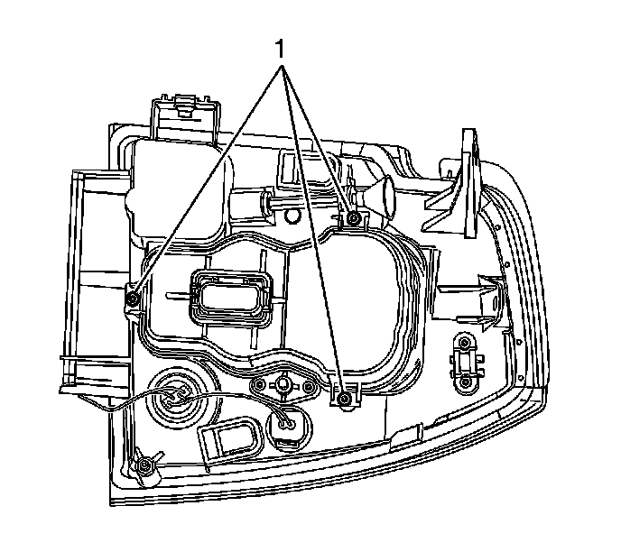
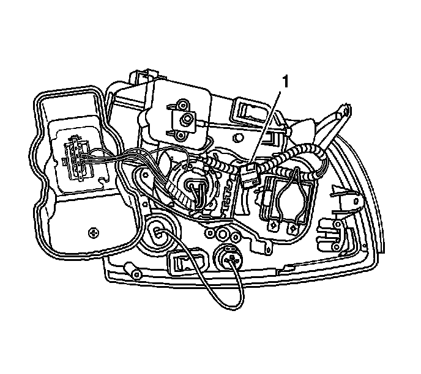
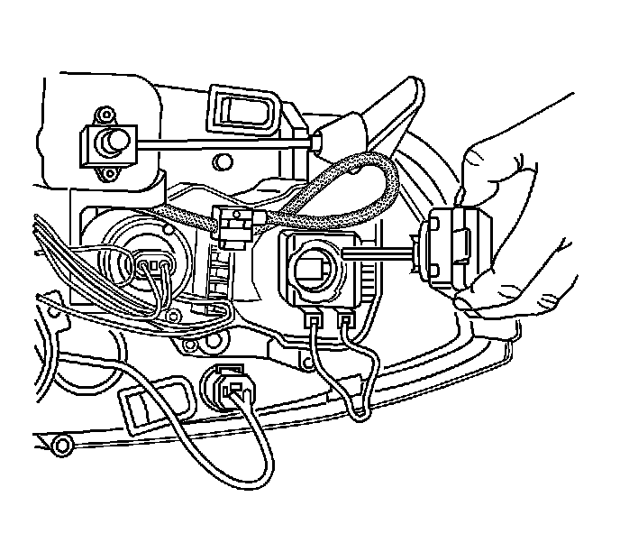

High Intensity Discharge Headlamp Starter/Arc Tube Replacement
High Intensity Discharge Headlamp Starter/Arc Tube Replacement
Removal Procedure
Caution: The high intensity discharge system produces high voltage and current. To reduce the risk of severe shocks and burns:
* Never open the high intensity discharge system ballast or the arc tube assembly starter.
* Never probe between the high intensity discharge system ballast output connector and the arc tube assembly.
Caution: The high intensity discharge system produces high voltage and current. In order to reduce the risk of severe shocks and burns, the battery negative cable must be disconnected any time service work is being performed on or around the high intensity discharge system.
Notice: When removing or replacing the arc tube, the arc tube must not contact the side of the headlamp housing or the bulb shield. Damage to the arc tube may result.

1. Disconnect the battery negative cable. Refer to Battery Negative Cable Disconnection and Connection (LHD) (Service and Repair)Battery Negative Cable Disconnection and Connection (RHD) (Service and Repair) .
2. Remove the headlamp. Refer to Headlamp Replacement (Service and Repair) .
3. Remove the arc tube cover screws (1) from the headlamp housing.

4. Disconnect the electrical connector (1) from the arc tube.
5. Remove the arc tube by pressing the retaining clip downward to release the clip.
6. Remove the arc tube.
Installation Procedure

1. Install the arc tube into the headlamp housing.
2. Press down on the retaining clip to lock the arc tube in place and reconnect the electrical connector.
3. Install the arc tube cover to the headlamp housing.
Notice: Refer to Fastener Notice (Fastener Notice) .
4. Install the arc tube cover screws to secure the cover.
Tighten the screws to 2 N.m (18 lb in).
5. Install the headlamp to the vehicle. Refer to Headlamp Replacement (Service and Repair) .
6. Connect the battery negative cable. Refer to Battery Negative Cable Disconnection and Connection (LHD) (Service and Repair)Battery Negative Cable Disconnection and Connection (RHD) (Service and Repair) .